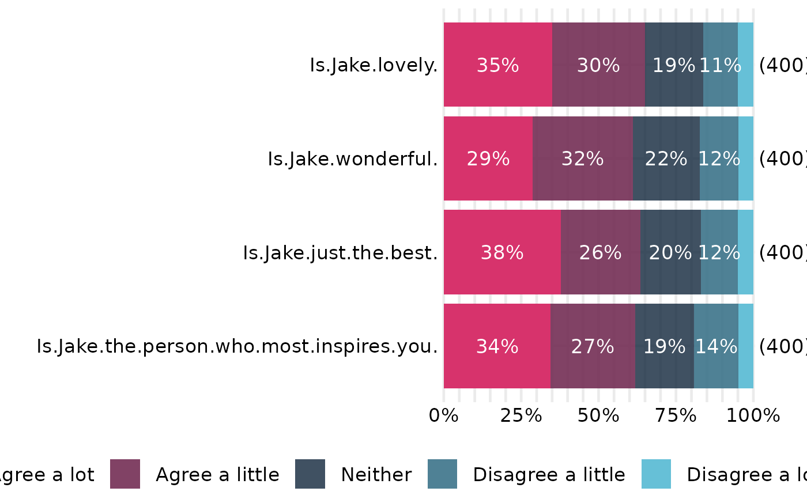
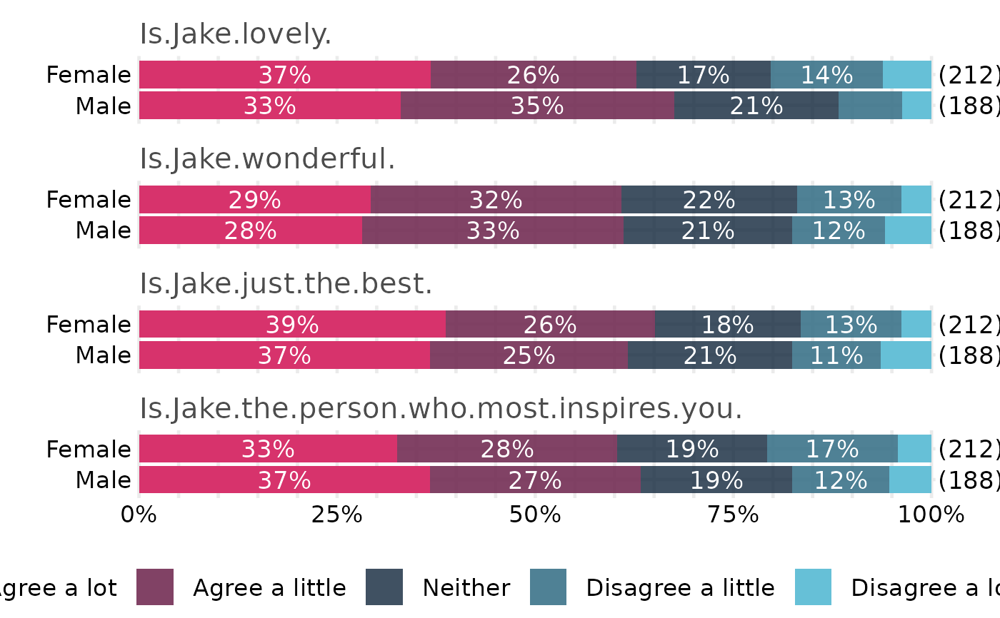

Plot stacked Likert-style survey questions (ROME style)
plot_ROME_survey.RdBuilds a horizontal 100% stacked bar chart for one or more survey questions,
adding in-segment percent labels (hidden below a cutoff), a right-edge N
label for each question, and a bottom legend that is left-aligned and wraps
across rows when needed. Bar thickness and text size remain constant; the
function computes and attaches recommended figure dimensions (in inches) that
you can pass to ggplot2::ggsave().
Usage
plot_ROME_survey_questions(
data,
columns = NA,
ordering = NA,
percentage_cutoff = 10,
label_size = 4.5,
n_label_pad_text = -0.1,
per_question_in = 0.5,
base_height_in = 0.8,
legend_allowance_in = 0.6,
width_in = 8,
y_label_wrap_width = 40,
legend_wrap_chars = 80,
right_margin_min_pt = 24
)
plot_ROME_survey_by_demographic(
data,
columns = NA,
demographic = NULL,
ordering = NA,
percentage_cutoff = 10,
label_size = 4.5,
n_label_pad_text = -0.1,
per_question_in = 0.5,
base_height_in = 0.8,
legend_allowance_in = 0.6,
width_in = 8,
y_label_wrap_width = 40,
legend_wrap_chars = 80,
right_margin_min_pt = 24
)Arguments
- data
A data frame where each selected column is a survey question and values are categorical responses (character or factor).
NAs are treated as non-responses and excluded from the per-questionN.- columns
Character or integer vector selecting the question columns; order matters (bars/facets appear top→bottom in this order). Default
NAuses all columns indata.- ordering
Optional character vector giving the desired response order from most-positive to most-negative. Controls bar stacking and legend order (legend display is reversed so the first level appears on the left of the bar).
- percentage_cutoff
Numeric in
[0, 100]; in-bar percentage labels smaller than this are suppressed (0-dp, with a%sign).- label_size
Numeric text size (ggplot2 size units) for both the in-bar percentage labels and the right-edge
Nlabels.- n_label_pad_text
Numeric passed to
hjustfor theNlabels; negative values place the label slightly outside the 100\ values pull it inside the bar.- per_question_in, base_height_in, legend_allowance_in, width_in
Sizing controls (in inches) used to compute recommended figure dimensions stored in the returned object (see “Value”).
- y_label_wrap_width
Integer; approximate wrap width (characters) for question (or demographic) labels after flipping.
- legend_wrap_chars
Rough character budget per legend row; used to choose
guide_legend(nrow = ...)so long legends wrap cleanly.- right_margin_min_pt
Minimum right plot margin (points) to reserve space for the right-edge
Nlabels.- demographic
Optional character scalar naming the demographic column in
data(e.g.,"Gender"). When supplied, the plot facets by question (top→bottom in the order ofcolumns) and draws one stacked bar per demographic level within each question. WhenNULLorNA, this function falls back toplot_ROME_survey_questions().
Value
A ggplot object. In addition to the usual plot methods, the
object carries these attributes for saving at a consistent size:
attr(p, "width_in")— recommended width in inches;attr(p, "height_in")— recommended height in inches;attr(p, "rome_dims")— list withwidth,height, andunits = "in".
Details
The percent axis spans 0–100 with major gridlines every 5\
0/25/50/75/100. Axis ticks and axis lines are suppressed. The legend is placed
at the bottom, left-aligned, and can wrap into multiple rows according to
legend_wrap_chars. Per-question N (excluding NA) is printed
at the right edge of each bar. Colours are drawn from get_OME_colours()
for the number of observed response levels.
Note: this function uses theme settings such as legend.location = "plot"
(honored by ggplot2 >= 3.5.0); on earlier versions that setting is
ignored, but the plot will still render.
Important
The top-to-bottom order of questions follows the order of columns you
pass in. Internally the function fixes factor levels (with coord_flip())
so the visual order matches the supplied columns.
Examples
# Minimal toy example (creates a small survey-like data frame)
if (requireNamespace("ggplot2", quietly = TRUE)) {
set.seed(1)
lvls <- c("Agree a lot","Agree a little","Neither",
"Disagree a little","Disagree a lot")
make_col <- function(n = 400) {
sample(c(lvls, NA), n, replace = TRUE,
prob = c(0.34, 0.29, 0.20, 0.12, 0.05, 0.00))
}
df <- data.frame(
`Is Jake lovely?` = make_col(),
`Is Jake wonderful?` = make_col(),
`Is Jake just the best?` = make_col(),
`Is Jake the person who most inspires you?` = make_col()
)
# The order of 'columns' controls the top->bottom order in the chart:
cols <- names(df)
p <- plot_ROME_survey_questions(
df,
columns = cols,
ordering = lvls,
percentage_cutoff = 10,
y_label_wrap_width = 40
)
print(p)
# Save with the recommended size:
ggplot2::ggsave(
"rome_demo.png", p,
width = attr(p, "width_in"),
height = attr(p, "height_in"),
units = "in", dpi = 300
)
}

if (requireNamespace("ggplot2", quietly = TRUE)) {
set.seed(1)
lvls <- c("Agree a lot","Agree a little","Neither",
"Disagree a little","Disagree a lot")
make_col <- function(n = 400) {
sample(c(lvls, NA), n, replace = TRUE,
prob = c(0.34, 0.29, 0.20, 0.12, 0.05, 0.00))
}
df <- data.frame(
`Is Jake lovely?` = make_col(),
`Is Jake wonderful?` = make_col(),
`Is Jake just the best?` = make_col(),
`Is Jake the person who most inspires you?` = make_col(),
Gender = sample(c("Male","Female"), 400, replace = TRUE, prob = c(0.47, 0.53))
)
cols <- names(df)[names(df) != "Gender"]
p_dem <- plot_ROME_survey_by_demographic(
data = df,
columns = cols,
demographic = "Gender",
ordering = lvls,
percentage_cutoff = 10,
y_label_wrap_width = 30
)
print(p_dem)
ggplot2::ggsave(
"rome_questions_by_gender.png", p_dem,
width = attr(p_dem, "width_in"),
height = attr(p_dem, "height_in"),
units = "in", dpi = 300
)
}
